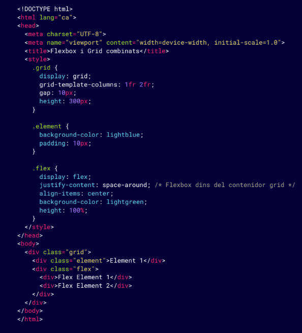
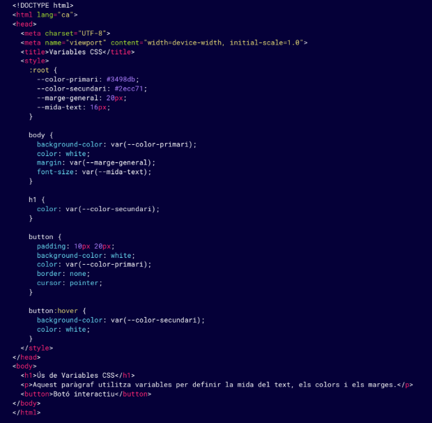
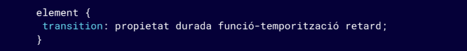
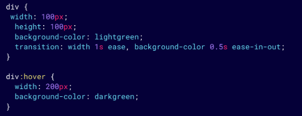
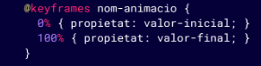
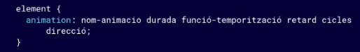
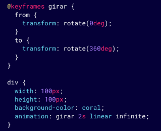
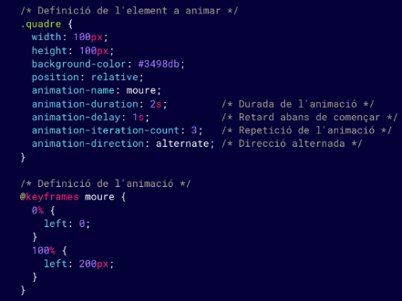
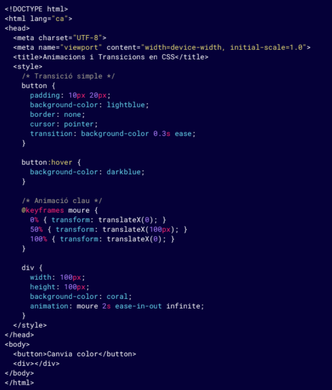

CSS AVANZADO: INTRODUCCIÓN
A medida que los proyectos web se vuelven más complejos, el uso del CSS también debe evolucionar para
ofrecer soluciones
más adaptativas, eficientes y organizadas. El CSS avanzado no sólo se centra en diseñar una página web
atractiva,
sino también al asegurarse de que esta página funcione bien en varios dispositivos, sea fácil de
mantener y esté
optimizada para un óptimo rendimiento.
Importancia del diseño adaptable y optimizado: Uno de los pilares del CSS avanzado es el diseño
responsive, que
permite que las páginas web se adapten a diferentes tamaños de
pantalla y dispositivos. Esta técnica es cada vez más importante
debido al aumento del uso de dispositivos móviles. Para conseguir
un diseño adaptativo, el CSS avanzado incorpora técnicas como:
- Media Queries avanzada
- Unidades relativas y flexibles
- Layouts responsive con Flexbox y Grid
Mejores prácticas de organización del CSS:
A medida que los proyectos se hacen mayores, es esencial mantener
una buena organización del código CSS para evitar que se vuelva difícil de
gestionar y mantener. A continuación, algunas mejores prácticas para
la organización del CSS en proyectos avanzados:
- Modularización del CSS:
- Dividir el código CSS en archivos más pequeños y temáticos
- Arquitectura CSS escalable (SMACSS, BEM)
- Pre-procesadores CSS
- Sass o LESS
- Optimización del CSS:
- Manificación del CSS
- Cargamento asíncrono del CSS
- Utilización de frameworks CSS:
- Bootstrap
- Tailwind CSS
SELECTORS AVANZADOS
Los selectores avanzados en CSS permiten aplicar estilos con mucha mayor precisión y flexibilidad,
permitiendo seleccionar
elementos específicos en función de su posición, relación con otros elementos o atributos.
- Selectores de atributo: Los selectores de atributo permiten aplicar estilos a los elementos
HTML que contienen un determinado atributo o valor de atributo. Son especialmente útiles para
estilizar.
elementos de formularios o en casos en los que utilices atributos personalizados.
- Seleccionar elementos con un atributo específico
- Seleccionar elementos con un atributo
que contiene un valor específico
- Seleccionar elementos con un valor de atributo
que comienza con un valor específico:
- Seleccionar todos los elementos con un atributo
- Selectores combinados: Los selectores combinados permiten seleccionar elementos que tengan
una relación específica con otros elementos dentro del documento. Los combinadores más
comunes son:
- Combinador de descendientes ( ):> Selecciona todos los elementos que son descendientes
(hijos, nietos, etc.) de un elemento padre.
- Combinador de hijos directos (>): Selecciona sólo a los hijos directos de un elemento
padre.
- Combinador de hermanos adyacentes (+): Selecciona el elemento que está justo después de
otro elemento hermano.
- Combinador de hermanos generales (~): Selecciona a todos los hermanos que siguen un elemento
determinado dentro del mismo padre.
- Selectores pseudo-clase: Las pseudo-clases son selectores que se utilizan para aplicar
estilos a un elemento en un estado o condición particular. Esto permite cambiar el estilo de un
elemento
cuando el usuario interactúa o cuando el elemento cumple ciertos criterios.
- :hover: Aplica estilos cuando el usuario pasa el ratón por encima del elemento.
- :nth-child(): Selecciona elementos en función de su posición entre sus hermanos.
- :first-of-type: Selecciona el primer elemento de su tipo dentro de su padre.
- :not(): Selecciona todos los elementos excepto aquellos que coincidan con el selector
especificado.
- Selectores pseudo-elemento: Los pseudo-elementos permiten aplicar estilos a una parte
específica de un elemento, como su contenido antes o después, o una línea de texto. Los pseudo-
elementos más comunes son ::before y ::after.
- ::before: Añade contenido o estilos antes del contenido real de un elemento.
- ::after: Añade contenido o estilos después del contenido real de un elemento.
FUENTES Y TIPOGRAFÍAS AVANZADAS
El control de la tipografía en una página web es crucial para garantizar una buena legibilidad y estética
consistente. En
CSS avanzado, tienes acceso a un conjunto de propiedades que te permiten controlar varios aspectos de
las fuentes, como la
su carga dinámica, espaciado, peso, y líneas de texto. También exploraremos cómo utilizar fuentes
personalizadas con la regla
@font-face.
- Tipografías web con @font-face:
La regla @font-face permite utilizar fuentes
personalizadas que no están disponibles en el sistema
del usuario. Esto significa que puedes cargar fuentes
específicas desde tu servidor o desde una fuente
externa como Google Fonts, garantizando una coherencia
tipográfica entre todos los usuarios, independientemente
del dispositivo o navegador que utilicen.
- Control avanzado de tipografía: Además de definir fuentes personalizadas, CSS ofrece
propiedades avanzadas para controlar otros aspectos tipográficos,
como el espacio entre letras, el grosor de la fuente o la altura de las líneas.
- Propiedad letter-spacing: La propiedad letter-spacing permite ajustar el espacio entre
las letras de un texto, haciendo que el texto se vea más
comprimido o espaciado.
- Propiedad line-height: La propiedad line-height controla la altura de las líneas de
texto. Una altura de línea mayor aumenta el espacio entre
las líneas, lo que puede mejorar la legibilidad.
- Propiedad fuente-weight: La propiedad fuente-weight controla el grosor del texto. Además
de los valores normal y bold, se pueden utilizar valores
numéricos entre 100 (muy delgado) y 900 (muy grueso),
ofreciendo mayor flexibilidad.
- Propiedad font-style: La propiedad font-style permite definir si el texto se
mostrará en estilo normal, cursiva u oblicua. Es útil para
dar énfasis al texto.
- Propiedad texto-transform
Esta propiedad permite cambiar la capitalización del
texto, convirtiéndolo todo en mayúsculas, minúsculas o
capitalizando la primera letra de cada palabra.
- uppercase: Convierte todo el texto en mayúsculas.
- lowercase: Convierte todo el texto en minúsculas.
- capitalize: Capitaliza la primera letra de cada palabra.
- Uso del Web Open Font Format (WOFF):
WOFF y WOFF2 son formatos de fuente comprimidos diseñados específicamente para uso
web. Estos formatos
proporcionan una compresión más eficiente que los formatos tradicionales, mejorando el tiempo de
carga de las
páginas sin perder calidad tipográfica. Es recomendable utilizar WOFF2 cuando sea posible, ya que es
el formato
más moderno y optimizado.
LAYOUTS CON FLEXBOX Y GRID
| Casos comunes para Flexbox |
Casos comunes para Grid |
| Cuando quieres alinear elementos en fila o columna, con
botones en una barra de navegación o imágenes en una
galería. |
Cuando quieres crear una página con una estructura
compleja (como una página con cabecera, barra
lateral, contenido principal y pie de página). |
| Cuando quieres distribuir el espacio entre elementos en una fila
(por ejemplo, centrando un elemento o espaciándolos
uniformemente). |
Cuando tienes un diseño en formato de cuadrícula
con filas y columnas, como un tablero de fotos o uno
diseño de cartas de productos. |
| Cuando los elementos deben crecer o reducirse por
llenar el espacio disponible, como en una barra lateral o
una fila de cartas. |
Cuando quieres controlar exactamente dónde va cada
elemento en la cuadrícula (puedes colocar elementos
en cualquier celda de la cuadrícula). |
Cuando se trata de crear diseños flexibles, adaptables y organizados, Flexbox y CSS Grid son las dos
herramientas más
poderosas del CSS. Con ellas puedes controlar la disposición de los elementos en la página, ya sea en
una fila, columna o
en cuadrículas complejas, adaptando los elementos fácilmente a distintos tamaños de pantalla y
requerimientos.
- Flexbox avanzado: alineación, flex-shrink, align-self: Flexbox es una herramienta muy
flexible para crear diseños en fila o columna, donde los elementos se alinean y ajustan
automáticamente según el espacio
disponible.
- flex-shrink: Controla cómo se reduce el tamaño de un elemento cuando no hay
tiene suficiente espacio disponible. Valores más grandes permiten que el elemento se
reduzca más.
- align-self: Permite que un solo elemento en un contenedor flex tenga
una alineación distinta al resto de elementos. Los valores pueden ser
flex-start, flex-end, center, baseline o stretch.
- Grid Layout: creación de cuadrículas: CSS Grid Layout es una herramienta más potente que
Flexbox cuando se trata de crear layouts en dos
dimensiones (hilera y columna). Grid permite colocar elementos en una cuadrícula con mucha
precisión,
controlando el tamaño de las filas y columnas, y permitiendo que los elementos se ajusten al espacio
disponible.
- grid-template-columns y grid-template-rows: Definen el número y el tamaño de las columnas
y filas dentro
del contenedor grid.
- grid-column y grid-row: Permiten que uno
elemento ocupe varias columnas o filas dentro de
la cuadrícula.
- gap: Define el espacio entre las filas y columnas de
la cuadrícula.
- Uso combinado de Flexbox y Grid: Aunque Flexbox y Grid se pueden utilizar por separado, a
menudo
es útil combinarlos para obtener lo mejor de ambos. Por
ejemplo, puedes utilizar Grid para definir la disposición general
de una página (filas y columnas) y utilizar Flexbox dentro
algunas áreas para ajustar la alineación de los elementos. En este ejemplo:
- El layout general se estructura con Grid, dividiendo la
página en columnas.
- Dentro de una de las celdas del Grid, se utiliza Flexbox para
alinear los elementos en una fila.

POPOVER API
La Popover API es una funcionalidad reciente que permite a los desarrolladores crear contenido
emergente (popovers)
de forma nativa, utilizando sólo HTML y CSS, sin necesidad de JavaScript. Esta API facilita la creación
de
componentes como menús, sugerencias o notificaciones que aparecen sobre el contenido existente.
Atributos HTML relevantes
- popover: Atributo global que designa un elemento como popover.
- "auto" (por defecto): El popover se muestra y se oculta automáticamente.
- "manual": El control de la visibilidad del popover se gestiona manualmente.
- popover target: Atributo que especifica el ID del elemento popover que se controlará.
- popovertargetaction: Define la acción a realizar sobre el popover.
- "show": Muestra el popover.
- "hide": Oculta el popover.
- "toggle": Alterna entre mostrar y ocultar el popover.
VARIABLES CSS (CUSTOM PROPERTIES)
Las variables CSS, también conocidas como Custom Properties, permiten definir valores
reutilizables dentro de un
documento CSS. Esta característica facilita mucho la gestión y mantenimiento de grandes hojas de estilo,
ya que puedes
centralizar valores como colores, tamaños y espaciados, y reutilizarlos en diversas reglas CSS. Si
necesitas hacer un cambio en
alguno de estos valores, sólo tendrás que modificar la variable en un sitio, y el cambio se propagará a
todas las partes del
documento donde se utiliza.
- Definir y utilizar variables CSS: Las variables CSS se definen dentro de cualquier selector
utilizando el prefijo --. Es habitual
definirlas en el selector :root para que estén disponibles globalmente en todo el documento.
- Beneficios de las variables en grandes proyectos:
El uso de variables es especialmente útil en proyectos grandes o complejos, donde necesitas
garantizar la consistencia en
colores, tamaños, fuentes y otros estilos. Cambiar estos valores en múltiples sitios manualmente
puede ser tedioso y propenso a
errores. Las variables centralizan estos valores en un solo sitio.
Ventajas
- Mantenibilidad: Puedes modificar fácilmente valores globales como los colores o tamaños
cambiando sólo una variable.
- Reutilización: Las mismas variables se pueden utilizar en cualquier lugar de la hoja de
estilo, ahorrando tiempo y espacio.
- Consistencia: El uso de variables asegura que todos los elementos que dependen de una
variable tengan lo mismo
estilo.
- Variables CSS con valores por defecto: Puedes proporcionar un valor predeterminado a las
variables CSS en caso de que no estén definidas. Esto es útil si quieres
asegurarte de que el diseño funcione incluso si la variable falla o no se encuentra.
Ejemplo completo con variables CSS
- Se utilizan variables CSS para gestionar los
colores, el tamaño del texto y los márgenes.
- El botón cambia de color cuando se pasa el
ratón por encima, utilizando las mismas
variables para su transición.

ANIMACIONES Y TRANSICIONES EN CSS
Las animaciones y transiciones en CSS son herramientas potentes que permiten añadir
movimiento e interacción visual a
las páginas web, mejorando la experiencia del usuario. Con estas técnicas, puedes controlar cómo los
elementos cambian sus propiedades (como color, posición u opacidad) de forma suave y fluida.
Sintaxi básica de transition
- Propiedad: La propiedad CSS que quieres animar (ej. background-color, transform,
opacity, etc.).
- Duración: ¿Cuánto tiempo durará la transición (ej. 0.5s, 2s).
- Función de temporización: Controla cómo será la velocidad de la transición (ej. ease,
linear, ease-in-out).
- Retraso: Opcional, define cuánto tiempo tardará en empezar la transición (ej. 1s).

Propiedades de transición (transition-property)
Si quieres ir varias propiedades simultáneamente, puedes especificarlas individualmente con
transition-property o
utilizar ajo para aplicar la transición a todas las propiedades que cambien.

En este ejemplo, cuando se pasa el ratón por encima del div, la anchura se animará durante 1 segundo y el
color de fondo durante 0.5 segundos, con funciones de temporización distintas.
Animaciones clave con @keyframes
Las animaciones en CSS permiten crear movimientos más complejos que las transiciones. Utilizan la
regla @keyframes
para definir puntos intermedios del movimiento o cambio de propiedad, y se aplican a través de la
propiedad animation.


- Nombre de la animación: El nombre de la animación definida con @keyframes.
- Duración: El tiempo que durará la animación.
- Función de temporización: Controla la velocidad de la animación (linear, ease, etc.).
- Retraso: Opcional, cuánto tiempo tardará en empezar la animación.
- Ciclos: ¿Cuántas veces se repetirá la animación (infinito para repetirla indefinidamente).
- Dirección: Opcional, si la animación se juega de forma normal o inversa (normal, reverse,
alternate).

En este ejemplo, el elemento gira continuamente gracias a
la animación girar, que dura 2 segundos y se repite
indefinidamente (infinite).
Propiedades de animación (animation-duration, animation-delay)
Las propiedades de animación te permiten personalizar cómo se
comporta una animación. Las más importantes son:
- animation-duration: Controla cuánto tiempo dura
la animación.
- animation-delay: Define un retraso antes que
la animación comience.
- animation-iteration-count: Controla cuántas veces
se repetirá la animación (1, 3, infinite).
- animation-direction: Define si la animación se juega ninguna
adelante (normal), hacia atrás (reverse) o alterna
(alternate).

Ejemplo animation

En este ejemplo, el botón cambia de color de forma suave cuando se
pasa el ratón por encima gracias a la transición, y el div se mueve hacia adelante y hacia atrás de modo
fluida gracias a la animación moverse, que se repite
indefinidamente.